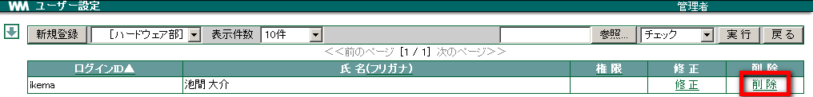
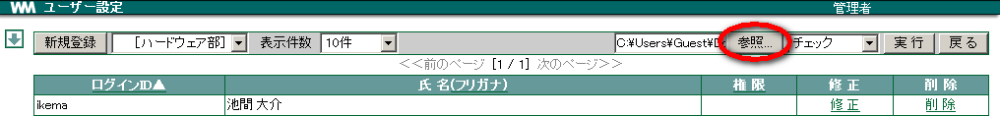
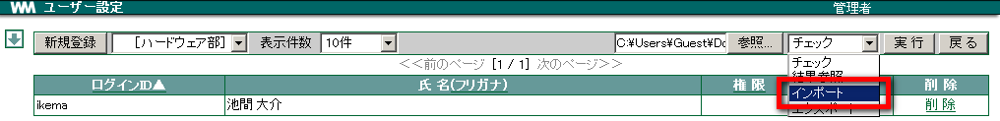
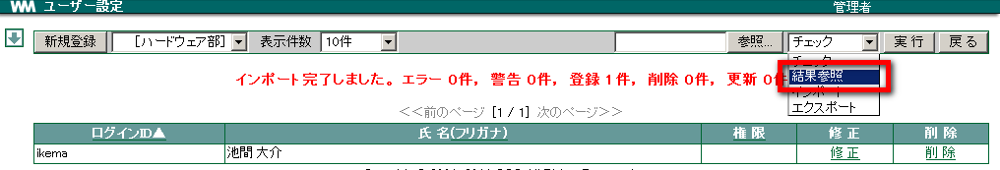
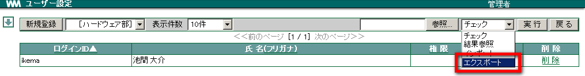

1. ユーザー¶
WebMagic を使用するユーザーの登録・更新・削除を行えます。 CSV 形式のファイルのインポート・エクスポートも対応しています。
Note
ユーザーを登録する前に、「所属」と 「役職」を先に作成しておきましょう。
1.1. ユーザーを登録する¶
メニューの
 をクリックします。
をクリックします。 をクリックします。
をクリックします。新規登録 をクリックします。

各項目を入力・選択し、 OK をクリックします。 [1]

| 伝言 | 行先伝言板で自分宛に伝言が登録された場合 |
| スケジュール | 他の人によって自分のスケジュールが登録された場合 |
| ワークフロー | 自分が閲覧すべきワークフローが届いた場合 |
「接続方法」では、接続方法によりチェックを付加します。
| 通常 | http://***.*** と入力し接続する場合 |
| SSL | https://***.*** と入力し接続する場合 |
| 携帯 | http://***.***/m/ と携帯電話 (i-mode, EZweb, Yahoo!ケータイ) 端末から接続する場合 |
| 携帯SSL | https://***.***/m/ と携帯電話 (i-mode,EZweb, Yahoo!ケータイ) 端末から接続する場合 |
Note
携帯での接続は、オプションの i-mode 対応または EZweb 対応, Yahoo!ケータイを購入している場合に可能です。
「ユーザー写真」では、ユーザーの写真が 3枚 まで登録できます。 [2]
1.2. ユーザーを修正する¶
メニューの
をクリックします。- をクリックします。
修正したいユーザーの 修正 をクリックします。

各項目を修正し、 OK をクリックします。
1.3. ユーザーを削除する¶
メニューの
をクリックします。- をクリックします。
削除したいユーザーの 削除 をクリックします。

確認メッセージが表示されたら、 OK をクリックします。
1.4. ユーザーをインポートする¶
CSV 形式のデータを取り込み、ユーザー情報を一括で登録・更新・削除できます。
- メニューの をクリックします。
- をクリックします。
- 参照 をクリックし、取り込む CSV ファイルを選択します。

プルダウンメニューから インポート を選択し、 実行 をクリックします。

インポート完了のメッセージが表示されます。プルダウンメニューから 結果参照 を選択して 実行 をクリックします。

インポートされた結果が別ウィンドウで表示されます。

<説明>
| チェック | インポートするデータの妥当性 (フォーマットなど) を確認します。インポートは実行されません。 |
| 結果参照 | チェック・インポート・エクスポートの処理結果を表示します。 |
| インポート | CSV 形式のファイルからデータを取り込みます。 |
| エクスポート | 登録したデータを CSV 形式で出力します。 |
1.5. ユーザーをエクスポートする¶
ユーザー情報を CSV 形式で出力することができます。
メニューの
をクリックします。- をクリックします。
プルダウンメニューから エクスポート を選択して 実行 をクリックします。

ダイアログが表示されるので、 保存 をクリックし保存したい場所を選択します。
1.6. CSV ファイルの書き方¶
CSV ファイルの作成は、一度エクスポートを行い、出力された CSV ファイル (export.csv) を編集してください。
Warning
CSV ファイルはメモ帳などのテキストエディタで編集してください。
WebMagic では CSV の性質上(ユーザの入力によって揺らぎが出る)、 ヘッダ以外のフィールドの値をダブルクォート「”」で囲む事を推奨しております。表計算ソフトを使用し編集しますと、ダブルクォートが外れた CSV が生成されてしまうため、ご注意ください。
| インポートに必要なヘッダーの説明 | ||
|---|---|---|
| operation | 操作 |
のいずれかを指定(半角英字) |
| username | ログイン ID | WebMagic にログインするときの ID 文字数は 15文字 まで。 利用可能文字は 半角英数字(a-z A-Z 0-9), アンダースコア(_), ハイフン(-) |
| password | パスワード | エクスポート時に作成される export.csv にはこの列は含まれない(セキュリティのため) [3] 文字数は 無制限 。 利用可能文字は 半角英数字(a-z A-Z 0-9), アンダースコア(_), ハイフン(-) |
| name | 氏名 | |
| kana | フリガナ | 全角カタカナ |
| roma | ローマ字 | 半角英字 |
| emp_code | 社員 ID | |
| post | 役職名 | 役職設定で設定した役職名。 複数ある場合は 「:」 で分割 例) 役職が「部長」と「課長」の場合, 「部長:課長」と指定 |
| extension | 内線番号 | |
| portable_phone | 携帯番号 | |
| e_mail | E-mail アドレス | |
| contact_email | メール通知アドレス | 伝言などで通知するアドレス |
| contact_email_flg | メール通知フラグ | メール通知を行うか否かのチェック(半角数字)。 「1」 が ON, 「0」 が OFF 例) 伝言(ON), スケジュール(OFF), ワークフロー(OFF)を「1:0:0」のように指定 |
| group | 所属コード | 所属設定で設定したコード(半角数字) 複数ある場合は 「:」 で分割 例) 所属が総務部「100」と 管理部「200」の場合, 「100:200」と指定 |
| home_address | 自宅住所 | |
| home_tel | 自宅 TEL 番号 | |
| home_fax | 自宅 FAX 番号 | |
| conn_method | 接続方法フラグ | WebMagic へのポート単位の接続許可のチェック(半角数字)。 「1」 が ON, 「0」 が OFF 例) 通常(ON), 通常 SSL(OFF), 携帯(ON), 携帯 SSL(ON) を「1:0:1:1」のように指定 |
| perms | 管理者権限 | WebMagic の管理者を指定する(半角英字)。 管理権限を与える場合は「admin」と指定 |
脚注
| [1] | パスワードはセキュリティのため ●●● と表示されます。 |
| [2] | [プライマリ写真] に設定した写真がアドレス帳のユーザー名簿に表示されます。 |
| [3] | パスワードを登録したい場合は、password ヘッダーを追加してください。 |